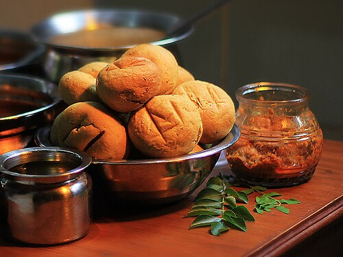

Dal Bati
Western India is a diverse region primarily composed of the states of Goa, Gujarat, and Maharashtra, along with the Union territory of Dadra and Nagar Haveli and Daman and Diu. It is known for its major cities like Mumbai, thriving industries, historical sites like the Ajanta and Ellora caves, and popular beaches in Goa and Maharashtra.

Daal bati Churma is an Indian dish of dal (lentils) and bati (hard wheat rolls). It is popular in Rajasthan, Madhya Pradesh (especially in Braj, Nimar and Malwa regions), Maharashtra's Khandesh and Vidarbha region, Gujarat, and Uttar Pradesh.
Ingredients
- 1/4 cup chana dal (split gram)
1/4 cup toor dal
1/4 cup moong dal (split with skin)
1/4 cup urad dal (split black lentil with skin)
- 1/4 tbsp turmeric (haldi)
- 2 tbsp ginger grated
- 1-1/2 tbsp salt
- 1 tbsp coriander powder (dhania)
- 2 tbsp mango powder (amchoor)
Recipe
- Combine all dals, wash changing water few times. In a pressure cooker add dal with 4 cups of water, salt, turmeric, coriander powder, and ginger, cook on medium high.
- After pressure cooker start steaming lower the heat to medium and cook for about eight minutes. Turn off the heat; wait until all the steam has escaped before opening the cooker.
- Dal should be soft and mushy, consistency of the pourable batter, if needed add hot water. The consistency of the dal will thicken over time.
-
Add garam masala and amchoor, mix it well.
- Heat ghee in a small saucepan for seasoning; after ghee is moderately hot add cumin seeds as they crack add asafetida, red chilies and red chili powder. Stir for a few seconds. To prevent the spices from burning, you may add 1 teaspoon of water. Pour spiced Chaunk over dhal. Mix it well and let it simmer for two to three minutes.
Back to Homepage